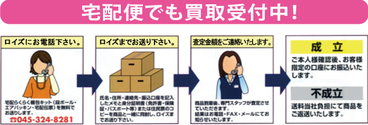

祝日は通常どおり営業しております。 但し、祝日が日曜日と木曜日に当たる場合はお休みとなりますのでご注意ください。
なおメールの返信は休日を除き、通常2日以内に致しますが、万が一、メールをお送りいただいたにも関わらず、当店より返信が届かない場合は、お手数ですが、再度ご連絡下さい。


| 神奈川県横浜市神奈川区のリサイクルショップのことならリサイクルブティックロイズへ |
祝日は通常どおり営業しております。 但し、祝日が日曜日と木曜日に当たる場合はお休みとなりますのでご注意ください。 なおメールの返信は休日を除き、通常2日以内に致しますが、万が一、メールをお送りいただいたにも関わらず、当店より返信が届かない場合は、お手数ですが、再度ご連絡下さい。 |
| |||
|  | ||||
|
| 店舗すぐ隣に無料駐車場があります！ |
 |